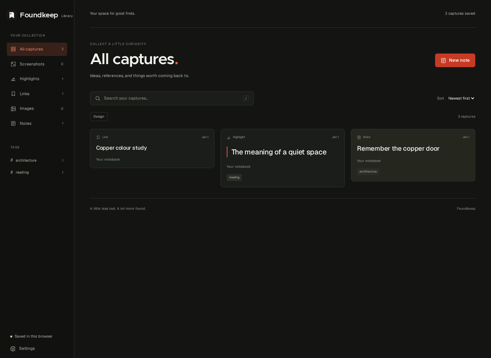

A good collection starts with noticing.
Leave a little room for the unexpected.
Field notes · sample source
Links, highlights, and little sparks of inspiration.
One collection. On your iPhone, in your browser, everywhere.
A sentence that sticks. A place to go. An idea for later.
Save it in the moment, without breaking your flow.
Some ideas arrive before you have a place for them. A good collection starts with noticing. Save the detail now. Come back to the possibility later.
Try saving the highlighted sentence.
Leave a little room for the unexpected.
Field notes · sample sourceTry it here. This demo does not save to your Foundkeep library.
Bring the things you love into one collection.
Keep the original source, so you can always go back.
“Pay attention.
The ordinary things
are often the
extraordinary ones.”
Original links, author and page details stay with your saves. A readable copy keeps useful article text close.
Group saves into folders, add your own tags, and find the things you need with keyword search.
Keep browser captures local, or connect your account to bring new saves into your private cloud collection.

At your desk, on a walk, or down a rabbit hole.
There’s a simple way to keep what catches your eye.
Save pages, screenshots, highlights and images without leaving the moment.
Add to ChromeShare links, photos and files to Foundkeep from the iPhone Share menu.
Get iPhone betaOpen your web dashboard to search, revisit and manage your synced saves.
Open your dashboardA reading list, a project, a someday folder. Give each find a place that makes sense to you.
Create your collectionThe extension works with Chrome, Edge, Brave, Opera and Vivaldi. The iPhone app is in a private TestFlight beta. Request access to try it.
Start with your browser. Connect an account when
you want your collection to come with you.
Start saving locally, without an account.
Connect an account for your private cloud library.
Sign in to the iPhone app with the same account, or choose Apps & devices in your dashboard to connect a browser. Existing local saves are imported only when you choose.
Save readable pages, links, highlights, screenshots, images and notes from your browser. On iPhone beta, share text, photos, video, audio, documents and other files into the same cloud collection.
Yes. Foundkeep retains the original source and available page details, including the visited and canonical URLs, title, author, publisher and dates. Save page also keeps a readable copy of useful article text. You can control what is collected in your dashboard’s capture settings.
You can use the browser extension locally without an account. Create an account to sync new captures with your web dashboard and iPhone. Existing local captures stay local until you explicitly import them.
Local browser saves live in that browser installation. Connected accounts also store synced captures on Foundkeep’s backend. Cloud and local copies are separate: deleting one does not automatically delete the other. Read our privacy policy.
The iPhone app is in a private TestFlight beta. Request access to try it. Sign in once, then choose Foundkeep from the Share menu in Safari, Photos, Files and other apps. Contact support about beta access.
Save the recovery code shown when you create your password account. Use it with your email to reset your password; Foundkeep does not send password-reset emails. Your account settings let you export cloud captures, revoke devices and permanently delete your account.
Sync your local-only captures before switching installations. Then install the Chrome Web Store version for automatic updates. Unsynced captures belong to the installation that created them.